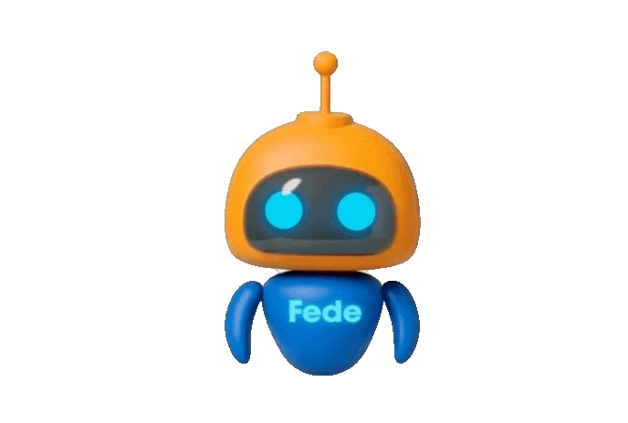

FICDE
Módulo: 3 PROTOCOLOS INTEGRALES Y APLICACIONES PRÁCTICAS

Espacio de Repaso Interactivo
Donde el conocimiento se convierte en acción
Síntesis
Diseño y desarrollo de sesiones integrales de reflexología, incluyendo valoración inicial, ambientación, técnicas manuales, protocolos por zonas y sistemas, dosificación de los estímulos y cierre de la sesión.
Análisis Crítico
Errores y riesgos en sesiones integrales de reflexología relacionados con la valoración y contraindicaciones, intensidad y secuencia de las técnicas, uso seguro de aceites esenciales, respeto del tratamiento médico, criterios de derivación y cuidados posteriores.
Escenarios
Abordaje y adaptación de sesiones de reflexología ante distintas condiciones y síntomas, contemplando precauciones, respuesta emocional, seguimiento y criterios de derivación profesional.
Práctica
Secuencia práctica de una sesión integral de reflexología, incluyendo higiene y preparación, técnicas de presión y masaje, protocolos podales y manuales, aromaterapia, respiración consciente y maniobras de cierre.